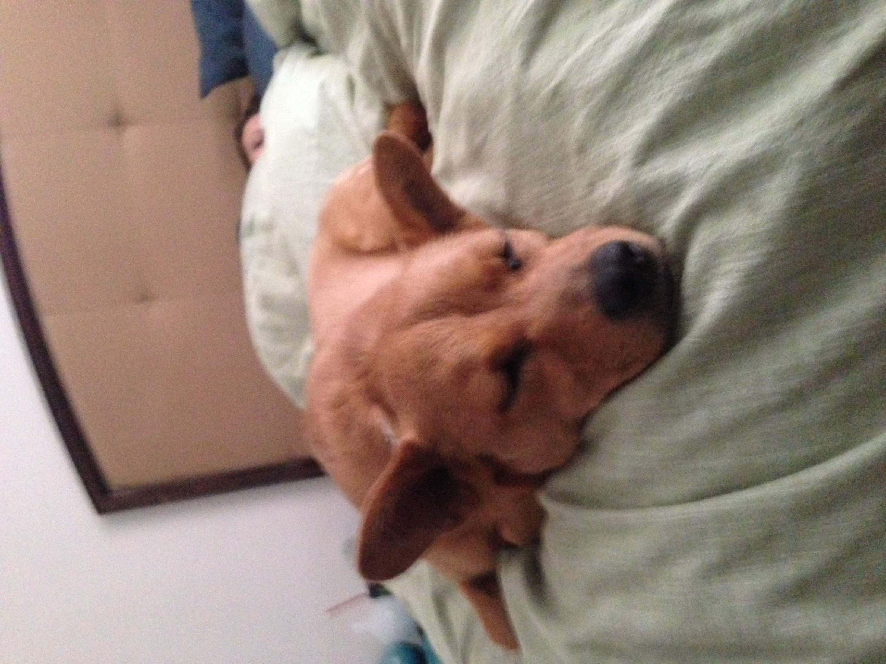

Moose is 1 and half years old. He can be a huge brat a lot of the time. But, he is a puppy though. He is a german Shepard Shiba Inu. His dad was a German Shepard, and his mom was a Shiba Inu. We got him when he was almost 2 months old. The week we got him was the last week of Febuary 2018.

We got her when she was a puppy. She is 12 years old. My brother was 6 months old when we got her. Him and her are the same age. She is a Chow Chow Shiba Inu.
When he first meets you he is always rude. But, the more he gets to know you the more he likes you. He is a chihuahua weiner dog. He is always around my brother zlandon because he is his boy. I am 2nd in the line that he chooses to hang out with when my brother isn't home. But, don't let hmim kiss you. His breath stinks so bad.
She is 3 months old. She is a lab mix. She is kind and sweet. She gives you hbs if you have her in your arms. She is completely sweet. You'll love her if you get to meet her.
Bailey is 18 years old. She is a Calico Maine Coon. My family had a few months before I was born. She is the kindess, and most caring cat I've ever seen.
I don't have an image of Izzy. But, she is nice and caring. She is 2 years old. I don't know what breed of cat she is. But, all that needs to be said is that she is the most nice and kindess cat that I've had since my cat Bear.